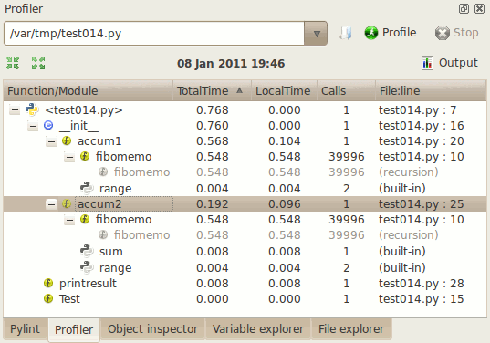

Profiler (spyder-profiler plugin)
The profiler plugin for Spyder
shows the time spent on each function/method during the execution of a
program.

The tree shows the results calculated by python’s module
‘cProfile’. Recursive calls appear only once and in lighter color.
Note that the time and call values shown by this plugin are global to
the execution of the program and not specific to a particular
call. Because of this, some functions/methods may show longer times
than their callers.
Features to add
- Redirect to the function definition in editor when clicking on a
profiler item.
- Color rows/cells according to time spent.
- Add icon to first column according to entry type (function, module, ...).
- Features from other profilers (see below).
- Show the class associated with each method.
Issues and bugs
- The data on each row corresponds to the total time or number of
calls for a function/method, not only the time/calls on that
particular instance. For this reason, you may see nodes with longer
times than their parents.
- Check that the combobox works as expected.
- Run profiler when selecting name on combobox.
- Store previous entries and results.
- Profiling multithreaded programs has not been tested.
- The icons do not differentiate between functions and methods.
{kind=link}
{kind=link}
{kind=link}